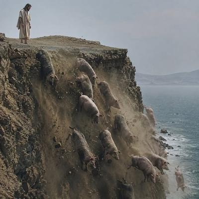

Hay relatos bíblicos que envejecen con bastante dignidad. Y luego está el episodio de los endemoniados de Gadara, que parece haber hecho exactamente lo contrario. Durante siglos se ha presentado esta historia como una demostración espectacular del poder sobrenatural de Jesús. Sin embargo, leída con los conocimientos científicos del siglo XXI, termina pareciendo más bien una demostración de lo poco que sabían las sociedades antiguas sobre las enfermedades mentales… y de lo fácil que resultaba culpar a un inexistente demonio de cualquier conducta que nadie comprendía.


Después de sobrevivir a una tormenta en el Mar de Galilea, Jesús y sus discípulos llegaron a la región de los gadarenos (Marcos 5:1; Mateo 8:28; Lucas 8:26), un territorio habitado por gentiles (no judíos), donde criar cerdos era una actividad perfectamente normal. Conviene recordar este detalle, porque para un judío observante el cerdo es un animal ritualmente impuro, una criatura cuya presencia inspiraba total rechazo. Si había un animal cuya desgracia difícilmente provocaría lágrimas en la mentalidad religiosa judía del siglo I, era precisamente el cerdo.
Nada más desembarcar apareció un personaje cuya conducta era muy perturbadora. Según Marcos, vivía entre sepulcros, rompía cadenas y grilletes, gritaba día y noche y se hería con piedras (Marcos 5:1-5). Lucas añade que llevaba mucho tiempo sin ponerse ropa, había abandonado su casa y vagaba por lugares desiertos (Lucas 8:27-29).
Hoy nadie con una formación mínima en salud mental, concluiría que ese hombre estaba habitado por «espíritus inmundos». Pensaríamos en un cuadro psiquiátrico grave, quizá acompañado de delirios, alucinaciones, conductas desorganizadas y autolesiones. No sería posible emitir un diagnóstico preciso a partir de un texto religioso, pero sí afirmar algo con bastante seguridad: la explicación de que «tiene seis mil demonios dentro», no aparecería en ningún manual moderno de psiquiatría.
Sin embargo, hace dos mil años no existían resonancias magnéticas, ni neurotransmisores, ni psicofármacos, ni psiquiatras. Existían demonios. Y demonios para casi todo. ¿Escuchas voces? Demonio. ¿Te golpeas contra las piedras? Demonio. ¿Gritas sin control? Demonio. ¿Presentas un trastorno neurológico que nadie comprende? También demonio. La demonología era extraordinariamente eficiente, ya que servía para explicar cualquier cosa cuya causa se ignorara.
Curiosamente, tratándose de la palabra perfecta de «Dios», los evangelistas ni siquiera consiguen ponerse de acuerdo sobre cuántos enfermos había: Marcos y Lucas hablan de uno, pero Mateo asegura que eran dos (Mateo 8:28). Un detalle curioso para un episodio que muchos consideran un registro histórico impecable. Después de todo, saber si había uno o dos protagonistas, parece un dato relativamente importante.
El caso es que cuando el supuesto «endemoniado» vio a Jesús, corrió hacia él, cayó de rodillas, y comenzó a gritar llamándolo «Hijo del Dios Altísimo» (para los judíos el Dios altísimo era Yahvé, pero para los miembros de aquel pueblo gentil, tenía que tratarse de otra divinidad, ver Marcos 5:6-7, Lucas 8:28).
Pero obsérvese el razonamiento implícito: no era el hombre quien hablaba, sino el demonio. Porque naturalmente, cuando una explicación resulta imposible, siempre queda la opción de atribuir las palabras a un ser invisible que nadie puede examinar, medir o detectar.
Jesús preguntó entonces el nombre del espíritu.
«Mi nombre es Legión, porque somos muchos.»
El simbolismo romano es evidente. Una legión podía reunir aproximadamente entre cinco y seis mil soldados, con lo que el autor pretende transmitir la idea de una invasión masiva de demonios. Lo sorprendente es que muchos lectores aceptan sin pestañear la existencia de miles de espíritus compartiendo un solo cuerpo humano, pero consideran extravagante creer que una enfermedad mental tenga origen biológico.
Resulta que los demonios suplicaron a Jesús que no los expulsara de aquella región, y Lucas añade que no querían ser enviados al abismo (Lucas 8:31). Cuando entonces vieron una gran piara de cerdos y propusieron un plan alternativo:
Déjanos entrar en ellos.
Y aquí el relato toma un giro que plantea más preguntas morales que teológicas. Jesús acepta, no destruye a los demonios, no los hace desaparecer, no los envía al vacío, ni los aniquila con una simple orden. Prefiere trasladarlos a unos animales que, hasta donde sabemos, estaban tranquilamente dedicados a sus asuntos porcinos.
Marcos habla de unos dos mil cerdos (Marcos 5:13), y Mateo y Lucas narran el mismo desenlace: toda la piara se precipita por un despeñadero, y muere ahogada. Fin del milagro. Pero comienza el problema ético: si Jesús tenía autoridad absoluta sobre los demonios, ¿por qué convertir a dos mil animales inocentes en víctimas de una guerra espiritual? ¿Por qué no eliminar directamente a los espíritus? ¿Por qué hacer recaer el castigo sobre seres que no habían cometido ninguna falta?
El relato nunca responde. Simplemente da por sentado que la muerte de dos mil animales carece de importancia. Y eso resulta especialmente llamativo, porque según los evangelios, Jesús afirmó que ni un solo gorrión cae a tierra sin que «Dios» lo sepa (Mateo 10:29). Sin embargo, dos mil cerdos despeñándose, parecen no merecer la menor consideración.
Quizás la explicación cultural sea más sencilla que la sobrenatural: para un judío del siglo I, los cerdos eran animales impuros. No eran precisamente candidatos a protagonizar una campaña antigua de protección animal. Por lo que cabe preguntarse si el relato habría sido el mismo de haber existido un rebaño de ovejas, animales profundamente valorados por la tradición israelita, y convertidos constantemente en símbolo del «pueblo de Dios». Resulta difícil imaginar un evangelio donde Jesús enviara miles de demonios al «rebaño del Buen Pastor» para demostrar su poder.
El filósofo británico Bertrand Russell resumió así el problema: «Está el ejemplo de los puercos de Gadar, donde ciertamente no fue muy compasivo para los puercos el meter diablos en sus cuerpos y precipitarlos colina abajo hasta el mar. Hay que recordar que [Jesús] era omnipotente, y simplemente pudo hacer que los demonios se fueran; pero eligió meterlos en los cuerpos de los cerdos»[1]. Y tenía razón. Un ser omnipotente no necesita sacrificar animales para resolver un problema sobrenatural. Lo hace sólo quien está limitado por la lógica del relato.
Pero quizá el aspecto más revelador del episodio no sea el destino de los cerdos, sino el del hombre. Detrás de aquella supuesta posesión demoníaca, había probablemente (al menos) un enfermo mental gravísimo. Un ser humano que necesitaba comprensión, tratamiento y cuidados. Y en cambio, recibió un diagnóstico sobrenatural que durante siglos se repetiría miles de veces sobre innumerables personas con epilepsia, esquizofrenia, trastornos bipolares, demencias, síndrome de Tourette, y muchas otras condiciones que la medicina terminaría identificando mucho después.
Eso constituye la verdadera tragedia del relato. No que hace dos mil años existieran personas que confundieran enfermedades mentales con «demonios». Eso era prácticamente inevitable. Lo verdaderamente sorprendente, es que después de dos milenios de avances en neurología, psiquiatría y psicología, todavía haya millones de personas convencidas de que la explicación correcta sigue siendo la misma que proponían quienes desconocían por completo cómo funciona el cerebro humano.
Por eso quizás el mayor milagro de esta historia no sea la expulsión de una legión de demonios. Quizá sea que una interpretación nacida en una época sin ciencia médica conserve todavía tantos defensores en pleno siglo XXI. Y, si el episodio ocurrió tal como lo narran los evangelios, conviene conceder al menos un minuto de silencio por los únicos inocentes cuya muerte está fuera de toda duda en la historia: los cerdos.
[Godless Freeman]
Comentarios
Comments powered by Disqus